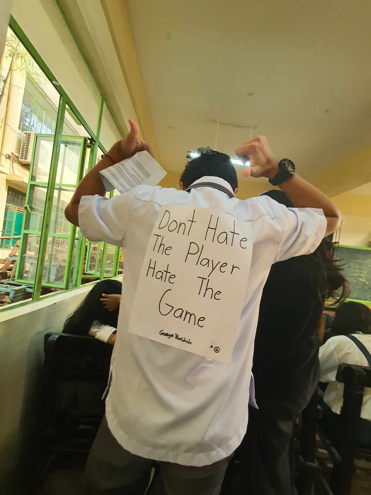

The right to education is a human right, and it is crucial for the exercise of other human rights. But despite our government’s efforts to provide free education to all Filipino children, there are still those who cannot benefit from this right for various reasons. Most of them are urban poor and children in street situations. So to reach out to these youths, Project SAFE wants to help through a street education program.
What is Project SAVE?
Project SAVE is a non-governmental organization (NGO) that aims to promote the welfare of the street children in the Philippines. They conduct a street child project called Street Education and Protection (STEP) program. It aims to equip street children with the knowledge, skills, and point of view that will help them improve their way of life.
What Does Project SAVE Do?
STEP program is Project SAVE's effort to provide quality education for a street child living in the urban poor areas of Butuan City. Guided by the Caring-Healing-Teaching framework, this program has four major parts.
1. Education
In an effort to bring education closer to the street children, Childhope Philippines has come up with “KalyEskwela,” a project which literally translates to “school on the streets.” They use mobile vans with audiovisual equipment to conduct classes. Under the Alternative Learning System (ALS) accredited by the Department of Education (DepEd), street children and youth learn through modules with guidance from street educators.
This street child project also aids children who go back to the formal school system. For older teens, the product conducts trade and tech skills training to help them gain income to support themselves as well as their families.
2. Psychosocial Interventions
Through counseling and referrals, the Childhope team helps the kids and their families to cope up with stress and the challenges that they face while learning. The team also assists shelters especially those with neglected and abandoned children.
3. Health and Medical Services
To provide primary preventive medical care, consultations, and treatments to street children, Childhope Philippines launched “KliniKalye,” a mobile health clinic. This part of the street education program ensures that every street child is healthy and in full physical capacity to learn.
4. Skills Development
As part of nurturing holistic growth, the Childhope team plans and conducts activities for street child. They train each kid for leadership roles, computer literacy, sports, arts, and other useful life skills. The team helps the street children develop these skills, build upon their good traits, and apply the values they have learned in life planning.
Who Are the Target Participants?
Childhope Philippines aspires to help the three types of street children in the Philippines grouped by the United Nations Children's Fund (UNICEF).
1. Children who reside in the street
They are those who run away from their families and live alone in the street.
2. Children who work in the street.
These include those who spend most of their time in the street but still go back to their homes.
3. Children from street families.
They are those who live with their families in the street.
How is Project SAVE's Street Education Program Different?
This program has an all-inclusive street education program in Butuan City. It provides for basic but urgent needs to support and ensure the continuous and holistic learning and development of its street children participants.
Project SAVE also has the widest scope of program areas in terms of geographical reach as it covers 15 areas in 6 cities of Metro Manila, reaching out to about 1,000 to 1,200 street children every year.
How Can You Help Project SAVE's Cause?
To sustain its street education program and advocacy, Project SAVE constantly needs people who share their passion for helping street children. To help their noble cause, you can be a Childhope volunteer or donate today!